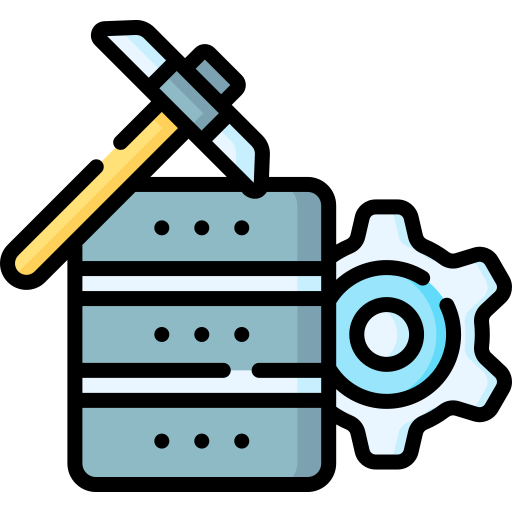

Replication Package
The methodology for the paper is split into 3 consecutive cycles.

Figure 1: Overview of the activities to synthesizing guidelines according to design science
First Cycle
The first cycle is devoted to establishing awareness of the state-of-the-art of field-based testing and runtime verification in robotics through existing surveys. We, then, reviewed the surveys to define the terminology to delimit the scope of the study and the search strings that we would use in the next iteration. We then validated the terminology and the search strings internally, through peer reviews and discussions with co-authors to consolidate the terminology and scope.
The surveys used withing this cycle are:
- 1. Afzal, Afsoon, et al. "A study on challenges of testing robotic systems." 2020 IEEE 13th International Conference on Software Testing, Validation and Verification (ICST). IEEE, 2020.
- 2. Albonico, Michel, et al. "Software engineering research on the Robot Operating System: A systematic mapping study." Journal of Systems and Software 197 (2023): 111574.
- 3. Bertolino, Antonia, et al. "A survey of field-based testing techniques." ACM Computing Surveys (CSUR) 54.5 (2021): 1-39.
- 4. Falcone, Yliès, et al. "A taxonomy for classifying runtime verification tools." International Journal on Software Tools for Technology Transfer 23.2 (2021): 255-284.
- 5. Garousi, Vahid, Michael Felderer, and Feyza Nur Kılıçaslan. "A survey on software testability." Information and Software Technology 108 (2019): 35-64.
- 6. Luckcuck, Matt, et al. "Formal specification and verification of autonomous robotic systems: A survey." ACM Computing Surveys (CSUR) 52.5 (2019): 1-41.
- 7. Malavolta, Ivano, et al. "Mining guidelines for architecting robotics software." Journal of Systems and Software 178 (2021): 110969.
Figure 2: Systematic mapping process
The literature review was built around a study protocol, to provide a systematic method for reviewing papers within the topic. We use automatic search-engines for collecting an initial set of papers, i.e., IEEEXplore, ACM Digital Library, and Scopus.
| ID | Description | Reasoning |
| IC_1 | ROS-based application. Including ROS1 and ROS2. | Robotic Operating System (ROS) is a must |
| IC_2 | Explicit description (or reference to peer-reviwed venue) | Papers that do not explicitely describe the employed technique may lead to ambiguous interpretation. |
| EC_1 | Tutorial, artifact, short paper (less than 5pgs), keynote, | Such papers do not provide enough contextual information |
| EC_2 | Verification, validation, or testing techniques that | Papers targeting V&V of non-ROS applications should be excluded. |
| EC_3 | Verification, validation, or testing techniques that | Papers targeting V&V of hardware should be excluded |
Table 1: Inclusion Criterion (IC) and Exclusion Criterion (EC)
Screening papers consists of passing the complete set of potentially useful papers through a filter. The outcome is the set of relevant papers. Thus, in this section we define the filter, by means of inclusion and exclusion criteria, and then the procedure to be followed when discarding papers. The individual work of screening consists of checking if the paper is in compliance with the criteria presented in Table 1. This is done by parsing the paper in search for ROS or ”robotic operating system”, which is usually spotted in the abstract and introduction. Then, looking for verification, validation, and testing techniques names (e.g., runtime monitoring, testing, theorem proving, model checking). Once a technique is found, the surrounding text is read to confirm if there is an explicit description of how it is used–or reference. Finally, scanning whether the used technique uses the ROS ecosystem.
Second Cycle
For the Second Cycle, we then used the search strings defined in the previous cycle to perform a systematic literature review. Then, we defined a template for describing the guidelines and a first draft of the guidelines. As a preliminary validation step, we presented a subset of the guidelines’ sketches at the Robotics Software Engineering workshop. We received feedback on the guidelines from three experts in robotics through a questionnaire and subsequent discussion.
| Element | Description |
| ID | Identifier used to facilitate tracing guidelines between groups |
| Title | Title summarizes an action that practitioners should follow to mitigate or avoid a recurring problem. |
| Context (WHEN) | The Context is a paragraph placing the guideline among a known set of conditions. This paragraph should delimit the scope in which the guideline is applicable. It should also introduce the conceptual terminology used in the guideline, which is defined by the conditions under which the guideline is valid. |
| Reason (WHY) | Reason introduces the recurring problem faced by practitioners. It intends to leverage the relevance of the guideline to practitioners |
| Suggestion (WHAT) | Suggestion is a sentence or two introducing WHAT should the practitioners do to mitigate the recurring problem |
| Process (HOW) | Process is a paragraph that carefully guides the practitioners through HOW they can practice the guideline. In this paragraph, there should be references to tools that may help, concrete examples, or references to precise explanations of researchers or practitioners who have done something similar. |
| Exemplars | Exemplars are concrete descriptions of papers/artifacts that follow the guidelines. An exemplar can be generic such as an artifact or rather specific such as a model problem in testing ROS-based systems in the field. |
| Strengths | Strengths is a list of benefits that the practitioners should consider when applying the guideline |
| Weaknesses | Weaknesses is a list of technological/theoretical barriers that may slow the actual implementation of the guideline, either by undesired side-effects or scenarios in which applying the guideline might not lead to the desired effect. |
Table 2: Template for Guideline Specification
Here is the validation questionaire for this segment, and it's answers, in an anonymized form.
Third Cycle
The third cycle was devoted to consolidating the set of guidelines and validating them with experts from industry and academia. The comments from the expert evaluation in cycle 2 suggested a need to complement the guidelines with concrete examples, e.g. “Can you provide code examples?” or “Without examples I wonder how such a specification pattern could look like.”. Thus, guided by such comments, we decided to perform a specific search and to mine online repositories.
Datamining Scripts
The scripts adapted from Ivano Malavolta et. al from the project 'Mining guidelines for architecting robotics software'. They can be found in the project's github repository along with instructions for generating the filtered repository database used in the project.
A paper detailing our whole process used in datamining the exemplars can be found here.

Figure 3: Datamining Methodology
We searched for repositories mentioned in the documents in complement to repositories that touched upon the theme of each guideline sketch. In the solution phase, we then developed the final version of the guidelines, provided exemplars for each of them, and clustered the guidelines as they are presented in this paper. Finally, we validated the final set of guidelines with practitioners and researchers. We designed and distributed an online questionnaire to experts from industry and academia, through the ROS community forum (namely ROS Discourse), LinkedIn, X (Twitter), and to experts we met at robotics and software engineering conferences. Before releasing the questionnaire to the wider community, we performed a pre-study with an experienced roboticist and active member of the ROS community and two members with widely recognized contributions to robotic software engineering from academia. The results from the third cycle confirmed the relevance of the guidelines and helped us to fine-tune them.
Questionnaire

This is the the validation questionnaire used to gather insights from experts from industry and academia. The main objective of the questionnaire was to check whether the guidelines synthesized from literature and insights extracted from open-source ROS repositories are considered to be useful, clear, and applicable by developers and QA teams testing and verifying ROS code. The mailer script used to distribute the questionnaire is also published on this repository.
The clustered guidelines can be found here.
The final online surveys, and their answers, can be found here:
Developers questionaire and answers QA Team questionaire and answers